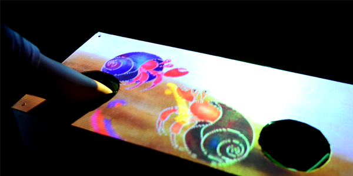
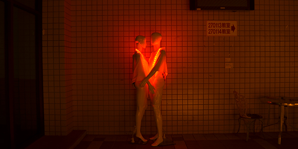
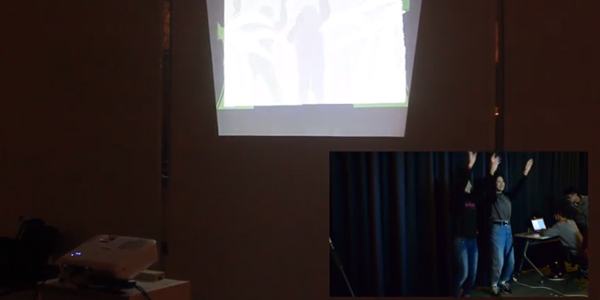

Home
CV
Works
Hobby
Selected Works

The Dark World

Intimate Cycle
NCCU Music Festival Logo Motion Graphic
Fun Taipei

Welcome to the Jungle
About
I am a designer, a programmer and an artist. Now living in New York and studying in MFADT in Parsons. Focusing on UI/UX design and interaction design. Like new media art and making interactive installations.
Email : changyihsin.anny@gmail.com